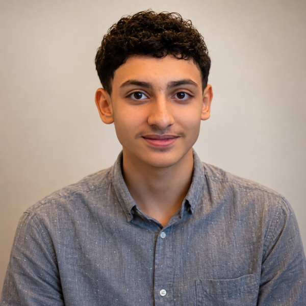

Réseaux & cyber
- Notions de réseaux et de routage
- Montage et configuration de PC
- Initiation à la cybersécurité : ANSSI et TryHackMe
- HTML et CSS : création de ce CV web

Étudiant / Réseaux & Télécommunications
Comprendre les réseaux.
Apprendre à les protéger.
En première année de BUT R&T à l’IUT de Colmar, je construis mes bases en réseaux et en cybersécurité. Mon objectif à terme : devenir responsable de la sécurité des systèmes d’information (RSSI).
03 / En dehors des cours